我们已经知道，帕斯卡三角形中的偶数与奇数表现出一种极其复杂的规律。对于斐波那契数列而言，情况则简单得多。在斐波那契数列中哪些是偶数呢？
1，1，2，3，5，8，13，21，34，55，89，144…
偶数有F3 = 2，F6 = 8，F9 = 34，F12 = 144，等等。（在本节中，由于斐波那契数列表现出更美的规律性，因此我们继续用大写字母“F”来表示斐波那契数列中的数字。）前几个偶数出现在第3、6、9、12等的位置上，说明每3项就有一个偶数。我们注意到，这个规律始于：
奇，奇，偶
然后重复：
奇，奇，偶，奇，奇，偶，奇，奇，偶……
这是因为，在每个“奇，奇，偶”代码块之后，接下来的代码块必然以“奇 + 偶 = 奇”开始，然后是“偶 + 奇 = 奇”，再然后是“奇 + 奇 = 偶”，如此循环往复。
用第3章的同余概念来表示的话，就是说斐波那契数列中的所有偶数都关于0同余（模为2），所有奇数都关于1同余（模为2），并且1 + 1 ≡ 0 (mod 2)。因此，斐波那契数列的以2为模的表达方式是：
1，1，0，1，1，0，1，1，0，1，1，0…
那么，斐波那契数列中的哪些数字是3的倍数呢？前几个是3的倍数的数字为F4 = 3，F8 = 21，F12 = 144，这似乎表明序号是4的倍数的数字都是3的倍数。为了证明这个猜想，我们以3为模，把斐波那契数列简化成0、1或2的形式，其中1 + 2 ≡ 0，且2 + 2 ≡1 (mod 3)。
于是，斐波那契数列变为：
1，1，2，0，2，2，1，0，1，1，2，0，2，2，1，0，1，1…
在第8项之后，又回到了1和1，因此整个数列围绕大小为8的数据块不断重复，其中0排在第4位。因此，序号是4的倍数的数字都是3的倍数，反之亦然。如果模为5、8或13，就可以证明：
序号是5的倍数的数字都是5的倍数；
序号是6的倍数的数字都是8的倍数；
序号是7的倍数的数字都是13的倍数。
而且，这个规律还可以继续推而广之。
斐波那契数列中两个相邻的数字有什么规律呢？它们有什么共同点吗？有意思的是，我们现在可以证明，从某种意义上讲，这些数字没有任何共同点。所以，我们说两个相邻的数字
(1 , 1), (1 , 2), (2 , 3), (3 , 5), (5 , 8), (8 , 13), (13 , 21), (21 , 34),…
是互质的。也就是说，不存在一个大于1且可以同时整除这两个数字的数。例如，以上面最后一对数字为例，我们发现21可以被1、3、7、21整除，而34的因数是1、2、17、34。因此，除了1以外，21和34没有公因数。我们能确定这个规律始终成立吗？我们是否可以确定下一对数字，即 (34 , 55)，也是互质的？我们无须找出55的因数，即可完成这项证明。我们反过来假设存在一个数字d > 1且可以同时整除34和55，那么这个数字肯定可以整除它们的差55 – 34 = 21（如果55和34都是d的倍数，它们的差也肯定是d的倍数）。但这是不可能的，因为我们已经知道不存在一个大于1且可以同时整除21和34的数字d。重复这个证明过程，就可以证明斐波那契数列中所有两个相邻的数字都是互质的。
接下来，我要向大家介绍斐波那契数列最讨人喜欢的一个特点！我们知道，两个数字的“最大公因数”（greatest common divisor）是可以同时整除这两个数字且数值最大的那个数。例如，20和90的最大公因数是10，记作：
(20 , 90) = 10
你知道斐波那契数列中的第20个和第90个数字的最大公因数是多少吗？绝对难以想象！答案是55，这个数字本身也包含在斐波那契数列中，而且正好是第10个数字！用等式表示的话，就是：
(F20，F90) = F10
一般地，对于整数m和n，有：
(Fm，Fn) = F (m, n)
也就是说，“斐波那契数列中两个数字的最大公因数也是斐波那契数列中的数字，它的序号就是那两个数字序号的最大公因数”！尽管我们不准备证明这个规律，但我还是要把它介绍给大家，因为这确实是一个美轮美奂的规律，我完全无法抵制它的诱惑。
规律有时候也具有欺骗性。例如，斐波那契数列中的哪些数字是“质数”（prime number）？（我们在下一章就会讨论质数的概念，它是指大于1且只能被1和自身整除的数。）大于1但不是质数的数叫作“合数”（composite number），因为它们可以被分解成较小数字的乘积形式。前几个质数是
2，3，5，7，11，13，17，19…
下面，我们考察序号为质数的斐波那契数列中的数字：
F2 = 1，F3 = 2，F5 = 5，F7 = 13，F11 = 89，F13 = 233，F17 = 1 597
可以看出，2、5、13、89、233、1 597都是质数。这个现象似乎表明，如果p > 2是质数，那么Fp也是质数。但是，F19 = 4 181不是质数，因为4 181 = 37×113。然而，如果斐波那契数列中的某个数字大于3且为质数，那么它的序号一定是质数，这条规律确实存在，而且可以根据我们前面讨论的一条规律推导得出。例如，F14肯定是一个合数，因为斐波那契数列中序号是7的倍数的数字都是F7 = 13的倍数（事实确实如此，F14 = 377 = 13×29）。
事实上，斐波那契数列中的数字为质数的情况极为少见。在我创作本书的时候，已经被证实是质数的数字一共只有33个，其中最大的是F81 839。对于斐波那契数列中的质数个数是否为无限的问题，数学界还没有得出最终结论。
下面，我暂停讨论这些严肃的内容，为大家表演一个根据斐波那契数列设计的小魔术。
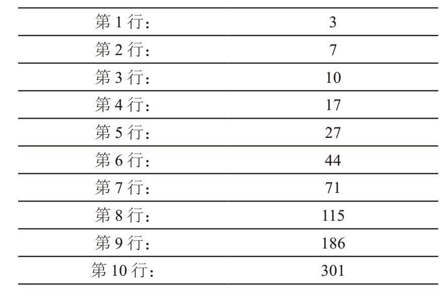
在上表的第1行和第2行中分别填入一个1~10中的数字。将这两个数字相加，并把和填入第3行。将第2行和第3行的数字相加，将它们的和填入第4行。按照斐波那契数列的特点，继续填写上表其余各行（第3行 + 第4行 = 第5行，以此类推），直到所有10行全部填满。接下来，用第9行的数字去除第10行的数字，读取得数的前三位数。在这个例子中，我们发现
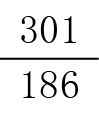
=1.618 279…。因此，得数的前三位数是1.61。无论你相信与否，在第1行和第2行填入任意一个正数（无须整数，也无须是1~10中的数字），第10行与第9行的比值一定是1.61。请大家自行举例验证。为了找出其中的奥秘，我们把第1行和第2行的数字分别记作x和y。如下表所示，根据斐波那契数列的特点，第3行必然是x + y，第4行是 y + (x + y) = x + 2y，以此类推。
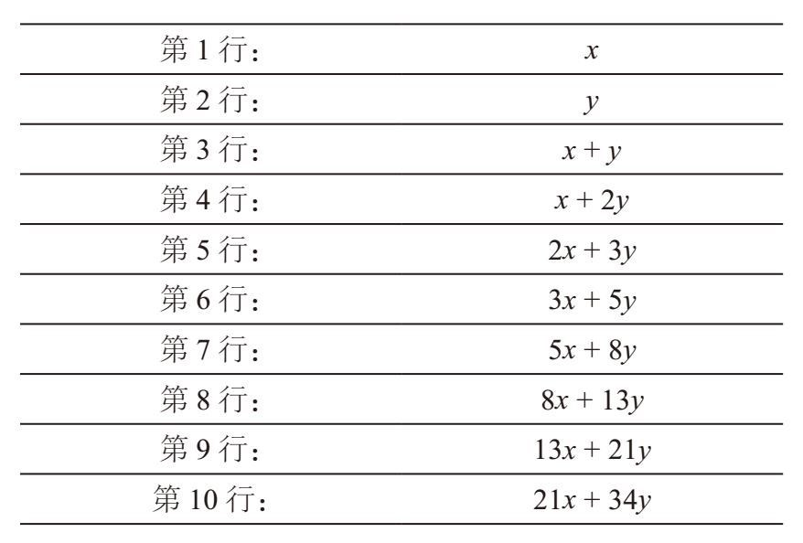
我们需要求出第10行与第9行的两个数字的比值：
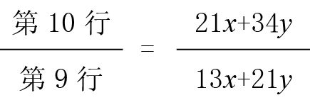
比值的前三位数一定是1.61，这是为什么呢？在回答这个问题时，我们可以从分数加法运算的一个常见错误中汲取灵感。假设有两个分数
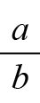
和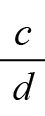
，其中b和d都是正数。如果将分子和分母分别相加，会得到什么结果？无论你相信与否，这个结果被称为“中间数”（mediant），即它一定是位于那两个分数之间的某个值。也就是说，对于任意两个不同的分数a/b < c/d，其中b、d为正数，都有：<
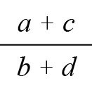
<例如，有两个分数1/3和1/2，它们的中间数是2/5，三者的关系是：1/3 < 2/5 < 1/2。
中间数的值为什么位于给定的两个分数之间呢？如果<，且b、d为正数，那么ad < bc必然成立。两边同时加上ab，得到ab + ad < ab + bc，即a (b + d) < (a + c) b，因此 <。同理，<成立。
接下来，请注意，对于x、y > 0，有：
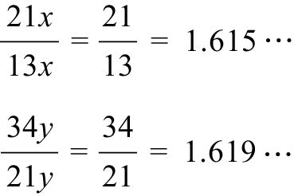
它们的中间数必须位于两个分数之间，也就是说：
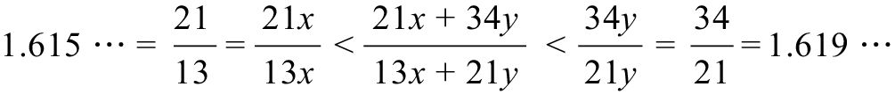
因此，第10行和第9行的数字比值的前三项必然是1.61。证明完毕。
在答出1.61之前，你可以迅速求出表中所有数字的和，让观众大吃一惊。例如，如果一开始的两个数字是3和7，你迅速扫一眼，就可以立刻说出所有数字之和——781。这是怎么做到的呢？是因为我们有代数这个武器。把前文第二张表中的所有数值相加，你就会发现和是55x + 88y。这又有什么用呢？有用，因为它正好是11(5x + 8y) = 11×第7行数字。因此，只需看看第7行的数字（本例中的这个数字是71），然后将它乘以11（或许你还可以使用本书第1章介绍的乘数是11的简便计算技巧），就可以得到781。
数字1.61有什么重要意义吗？如果把表格不断延续下去，你就会发现相邻两项的比值逐渐趋近于黄金比例[1]（the golden ratio）。
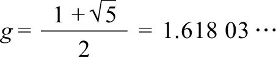
有时，数学界用希腊字母φ来表示这个数字。
通过代数运算，我们可以证明斐波那契数列中两个相邻数字之间的比值与g越来越接近。假设随着n不断增大，Fn+1 / Fn与某个比值r越来越接近。但是，根据斐波那契数列的定义，Fn+1 = Fn + Fn–1，因此：
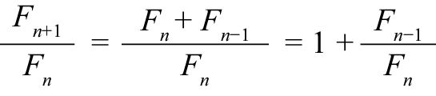
随着n不断变大，等式左边不断趋近于r，而等式右边不断趋近于1 +
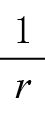
，因此：r = 1 +
等式两边同时乘以r，就会得到：
r2 = r + 1
也就是说，r2 – r –1 = 0，根据二次方程求根公式，该方程式的唯一正根是 r =
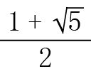
，即g。斐波那契数列的第n个数字有一个非常迷人的表达式，就是“斐波那契数列比内公式”：
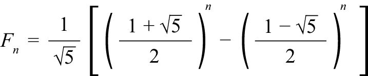
这个公式非常有意思，也让人感到非常不可思议，因为每一项里都有
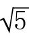
，但最后的结果却是整数！由于
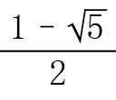
= – 0.618 03…，它的值在 –1和0之间，如果我们对它不断地进行升幂处理，它就会越来越接近0。事实上，我们可以证明，对于任意的n≥0，我们都可以通过计算gn/ 的值，然后取最接近这个值的整数，来得到Fn。不信的话，请你拿出计算器，自己动手算算看。如果g取近似值1.618，升到10次幂就是122.966…（接近于123）。然后用这个数字除以（约等于2.236），结果是54.992。四舍五入后，就会得到F10 = 55，这与我们已知的情况一致。如果取g20，即15 126.999 93，它除以的商是6 765.000 03，因此F20 = 6 765。利用计算器计算g100 /，就会得到F100，约为3.54×1020。在我们刚才的计算过程中，我们似乎把g10和g20视为整数来处理，这是为什么呢？请仔细观察“卢卡斯数列”（Lucas Sequence）：
1，3，4，7，11，18，29，47，76，123，199，322，521…
卢卡斯数列是以爱德华·卢卡斯（Édouard Lucas，1842—1891）的名字命名的。这位法国数学家发现了该数列与斐波那契数列的众多属性，其中包括我们在前面讨论的最大公因数属性，而且他是把1，1，2，3，5，8…命名为斐波那契数列的第一人。卢卡斯数列有它自己的比内公式（比斐波那契数列比内公式简单一些），即：
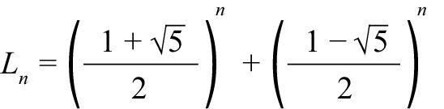
也就是说，对于n≥1，Ln是非常接近gn的整数。（这与我们在前面看到的内容是一致的，因为g10≈123 = L10。）从下表可以看出，斐波那契数列与卢卡斯数列还有其他的关系。
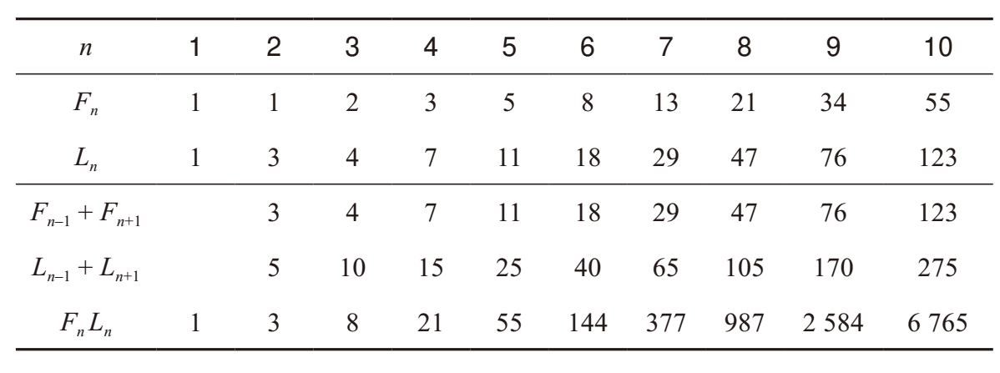
有的规律是显而易见的。例如，把斐波那契数列中的某个数字的左右“邻居”相加，就会得到卢卡斯数列中的某个数字：
Fn–1 + Fn+1 = Ln
把卢卡斯数列中某个数字的左右“邻居”相加，和是斐波那契数列中的某个数字的5倍：
Ln–1 + Ln+1 = 5Fn
将斐波那契数列中的某个数字与对应的卢卡斯数列中某个数字相乘，就会得到斐波那契数列中的另一个数字！
FnLn = F2n
我们利用比内公式和简单的代数运算［比如，(x – y)(x + y) = x2 – y2］，证明上面给出的最后一种关系。令h = （1–）/2，斐波那契数列和卢卡斯数列的比内公式可以分别表述为：
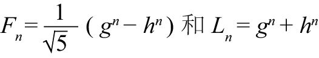
把这两个表达式相乘，就会得到：
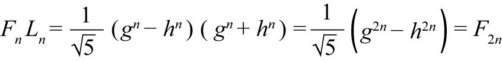
那么，“黄金比例”这个名称又是从哪里得来的呢？它来自“黄金矩形”（golden rectangle）。如下图所示，该矩形的长宽之比正好是g = 1.618 03…。
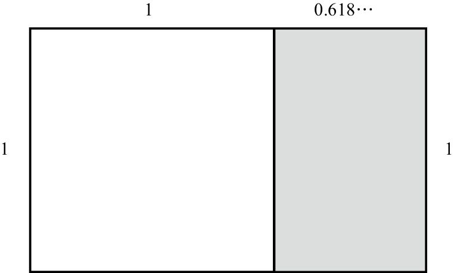
把矩形的短边定义为1个单位，从矩形中移除一个1×1的正方形，剩下的矩形大小为1×(g–1)，它的长宽之比为：
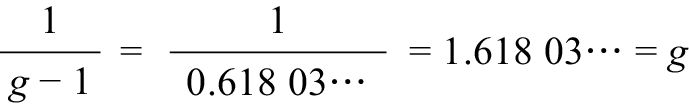
因此，这个小矩形也同原来的矩形一样，具有黄金比例关系。顺便告诉大家，g是具有这种完美属性的唯一数字，因为等式
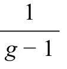
= g，即g2 – g – 1 = 0。根据二次方程求根公式，满足这个方程式的唯一正数就是（1 +） / 2 = g。凭借这个属性，黄金矩形被视为最美的矩形，很多艺术家、建筑师和摄影师都会有意识地在作品中使用这种矩形。达·芬奇的老朋友、合作伙伴卢卡·帕乔利把黄金矩形的长宽比称作“神圣比例”（the divine proportion）。
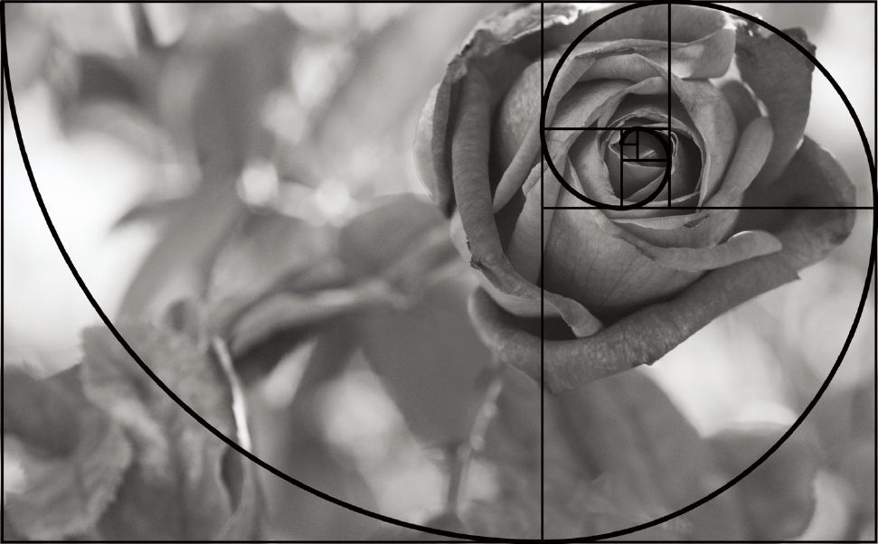
由于黄金比例具有很多充满美感的数学属性，即使某些情况与黄金比例无关，人们也往往会想到它。例如，丹·布朗在他的著作《达·芬奇密码》中断言，1.618这个数字几乎无处不在，人类的身体就是一个证据。例如，布朗称，人的身高与肚脐高度之比一定是1.618。我自己没有做过这个实验，但是《大学数学》杂志上刊登了一篇题为“黄金比例的误读”的文章，作者乔治·马考夫斯基称这个说法根本不对。不过，在某些人看来，只要某个数字似乎与1.6比较接近，就意味着黄金比例在发挥神奇的作用。
我经常说，斐波那契数列的许多规律都充满了诗意。我在这里举一个从诗歌得出斐波那契数列的例子，大多数五行打油诗都有下面这种韵律。（暂且把这首打油诗称作“dum”吧。）
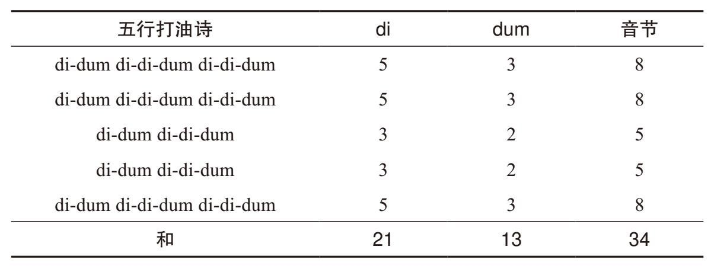
数一数每行的音节数，就会发现到处都是斐波那契数列中的数字！我诗兴大发，决定也创作一首斐波那契数列的打油诗：
I think Fibonacci is fun（我觉得斐波那契数列真有意思。）
It starts with a 1 and a 1（开始两项是1和1。）
Then 2, 3, 5, 8（然后是2，3，5，8。）
But don’t stop there, mate（不过，伙计，不要着急，）
The fun has just barely begun!（更好玩的还在后面呢！）
[1] 黄金比例，美国常用1.618 03…表示，中国惯用0.618 03…表示，表示方法不同，实质计算相同。——编者注